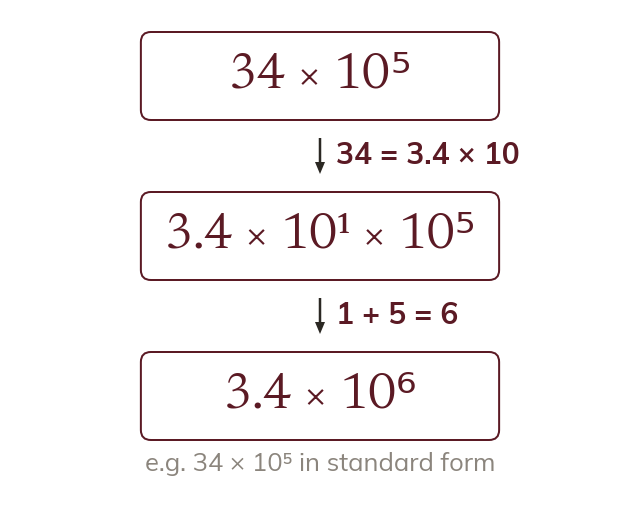

A between 1 and 10
A number like 34 × 10⁵ is not in standard form. Its first part must lie between 1 and 10.
A number such as 34 × 10⁵ has the right value but is not in standard form, because 34 is not less than 10. Rewriting it moves the point in A and changes the power to keep the value.